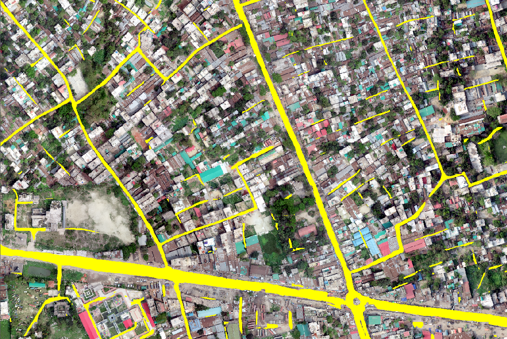

GeoAI and Graph-Based Road-Network Intelligence from UAV Imagery
Combines UAV road extraction with graph-based analysis to improve network continuity and geospatial-database quality.
- Research focus
- Move from isolated image predictions to reliable, connected and GIS-ready road networks.
- Methods & data
- UAV RGB imagery · road extraction · graph learning · topology and connectivity checks · road-database refinement.
- Current stage
- Ongoing · framework, data preparation and validation design.

Research rationale and objective
Research overview
UAV imagery provides detailed road candidates, while graph methods represent junctions, connectivity and network structure. Evaluation focuses on continuity, completeness and database refinement.
1. Research motivation
Problem context and research need
Reliable road-network information is important for transportation planning, infrastructure management, emergency response, accessibility assessment, navigation, urban development, and geospatial database maintenance.
Automatically generated road data may contain incomplete, uncertain, or structurally inconsistent features. Visually accurate predictions may also fail to represent the functional relationships required for a usable transportation network.
Conventional image-based approaches primarily detect road features through visual characteristics, whereas road reliability also depends on continuity, relationships, and compatibility with the surrounding network. The research therefore introduces graph-based geospatial intelligence as a complementary network-level perspective.
2. Research objective
Conceptual direction
Detailed road information. Use high-resolution UAV imagery to support fine-scale road-feature observation and mapping.
Network-aware assessment. Represent relational and network-level characteristics for road-quality assessment and geospatial database improvement.
Methods and current progress
3. Current research progress
Work presently under development
| Research component | Current focus |
|---|---|
| Framework development | Conceptual and methodological framework development. |
| Data preparation | UAV imagery and geospatial road-data preparation. |
| GeoAI analysis | GeoAI-based road-network analysis and candidate assessment. |
| Graph representation | Graph-based spatial-representation design. |
| Quality assessment | Road-network and existing-database evaluation framework development. |
| Validation design | Comparative modelling, experimental preparation, and spatial validation planning. |
| Manuscript development | Journal-manuscript preparation alongside the experimental workflow. |
Contribution and applications
4. Expected research contribution
Anticipated methodological and applied value
- Improved reliability of UAV-derived road information.
- Stronger representation of spatial and network relationships.
- Improved assessment of road-network completeness.
- Identification of uncertain or inconsistent road features.
- Enhanced structural quality of geospatial road data and more effective evaluation of existing databases.
- Improved transferability across different geographic environments.
- A reproducible graph-based workflow for road-network intelligence.
5. Potential applications
Possible domains of use
- Road-database updating
- Network continuity and topology QA
- Navigation-data improvement
- Emergency accessibility assessment
- Infrastructure monitoring
- Rural and underserved-area mapping
6. My contribution
Research responsibilities
- UAV road-candidate preparation
- Graph representation of road segments and junctions
- Connectivity and topology assessment
- Comparison with existing road databases
- Spatial validation and experimental evaluation
- Road-network result interpretation and manuscript preparation